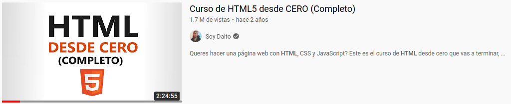
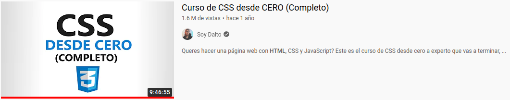
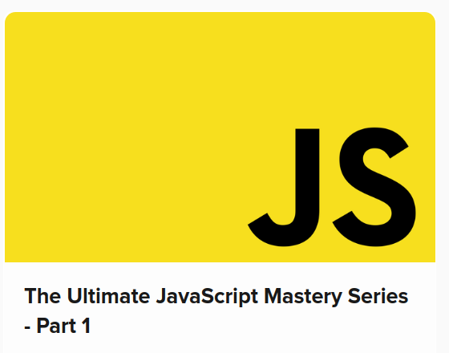
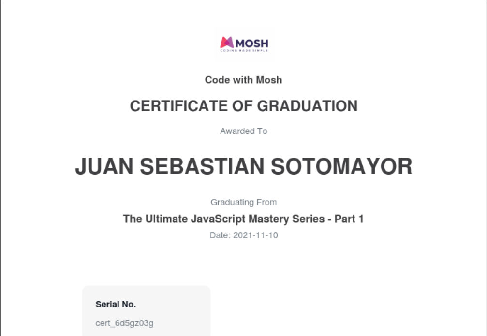
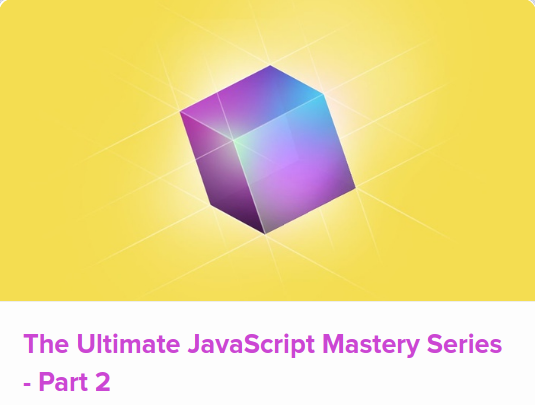
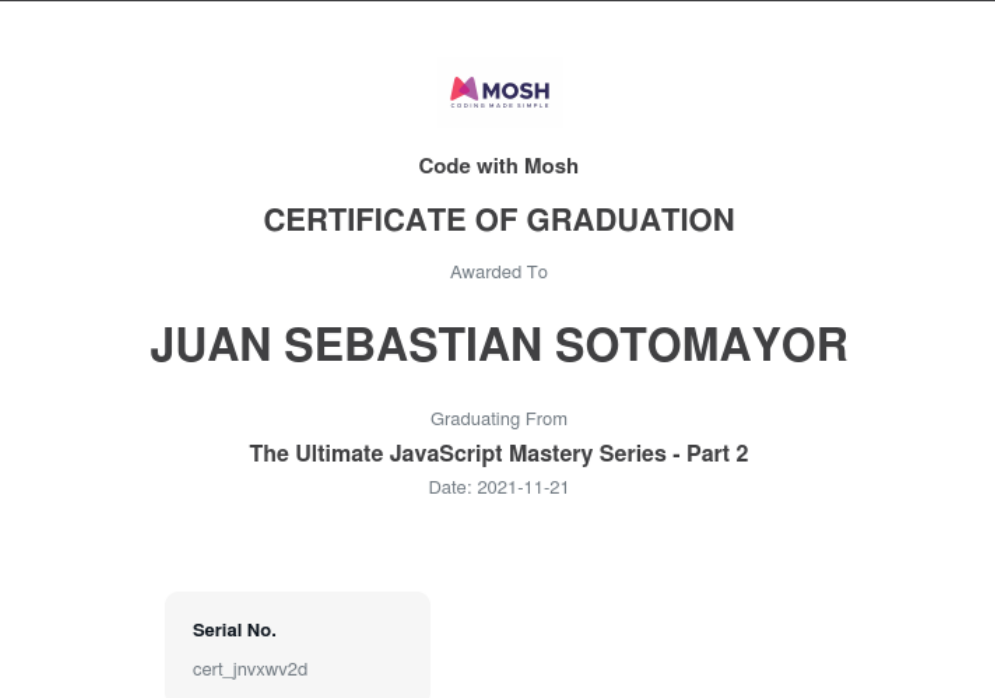
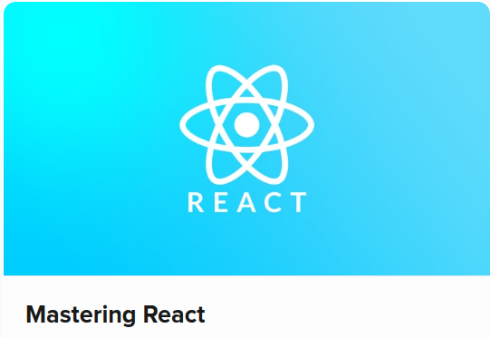

En esta sección se mostrará los cursos realizados por Juan Sebastian Sotomayor en busqueda de mejorar sus habilidades como desarrollador.
A continuación te mostraré algunos de los lenguajes que conozco y que considero fundamentales para el desarrollo.
HTML es el lenguaje con el que se define el contenido de las páginas web. Básicamente se trata de un conjunto de etiquetas que sirven para definir el texto y otros elementos que compondrán una página web, como imágenes, listas, vídeos, etc.
El HTML es un lenguaje de marcación de elementos para la creación de documentos hipertexto, muy fácil de aprender, lo que permite que cualquier persona, aunque no haya programado en la vida, pueda enfrentarse a la tarea de crear una web. HTML es fácil y pronto podremos dominar el lenguaje. Más adelante se conseguirán los resultados profesionales gracias a nuestras capacidades para el diseño y nuestra vena artista, así como a la incorporación de otros lenguajes para definir el formato con el que se tienen que presentar las webs, como CSS.
Aprendí HTML con Lucas Dalto
Video HTML
CSS (en inglés Cascading Style Sheets) es lo que se denomina lenguaje de hojas de estilo en cascada y se usa para estilizar elementos escritos en un lenguaje de marcado como HTML. CSS separa el contenido de la representación visual del sitio.
CSS fue desarrollado por W3C (World Wide Web Consortium) en 1996 por una razón muy sencilla. HTML no fue diseñado para tener etiquetas que ayuden a formatear la página. Está hecho solo para escribir el marcado para el sitio.
Aprendí CSS con Lucas Dalto
Video CSS
JavaScript es un lenguaje de secuencias de comandos que te permite crear contenido de actualización dinámica, controlar multimedia, animar imágenes y prácticamente todo lo demás. (Está bien, no todo, pero es sorprendente lo que puedes lograr con unas pocas líneas de código JavaScript).
Aprendí Javascript en Code With Mosh
Link al curso de Javascript
Cerificado de JavaScript
La programación orientada a objetos (Object Oriented Programming, OOP) es un modelo de programación informática que organiza el diseño de software en torno a datos u objetos, en lugar de funciones y lógica. Un objeto se puede definir como un campo de datos que tiene atributos y comportamiento únicos.
La programación orientada a objetos se centra en los objetos que los desarrolladores quieren manipular en lugar de enfocarse en la lógica necesaria para manipularlos. Este enfoque de programación es adecuado para programas que son grandes, complejos y se actualizan o mantienen activamente.
Aprendí Programación Orientada a Objetos en Code With Mosh
Link al curso de OOP
Cerificado de Programación Orientada a Objetos
React es una librería de JavaScript para desarrollar interfaces de usuario. Según a quién le preguntes, puede que te digan que es la “V” de un framework MCV (Modelo-Vista-Controlador), y es que, al tratarse de una librería, React necesita ser acompañado de otras librerías para completar las necesidades de desarrollo de nuestra aplicación web.
Aprendí React.js en Code With Mosh
Link al curso de React.js